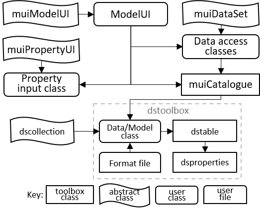
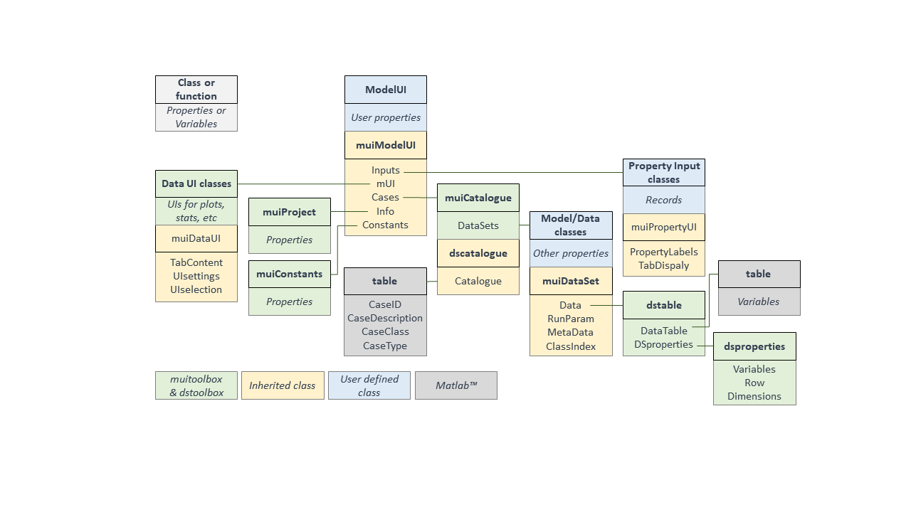

muitoolbox
muitoolbox is a collection of classes used to create bespoke UIs for models and data analysis.
Contents
Licence
The code is provided as Open Source code (issued under a BSD 3-clause License).
Requirements
muitoolbox is written in MATLAB™ and requires v2016b, or later. In addition, the toolbox makes use of the dstoolbox.
Abstract classes
These include the following abstract classes:
- muiModelUI – an abstract class that defines the requirements for a user interface and provides several methods that are implemented unless overloaded in the implementing class.
- muPropertyUI – an abstract class the provides the methods for loading and displaying input parameters, minimising the effort to set-up interactive data input.
- muiDataUI - an abstract class for creating graphic user interface to select data and pass selection to applications.
- muiDataSet – an abstract class that defines the requirements for user interfaces to access the data.
For further documentation of these classes see muitoolbox classes.
Utility classes
In addition the toolbox includes the following utility classes:
- muiCatalogue – manages the storing and access to model Cases (imported data or model outputs).
- muiProject – holds current project details.
- muiConstants – standard physical values (acceleration due to gravity, densities, year to seconds, etc).
- muiUserData - import data sets using user-defined format file.
- muiEditUI - data selection UI to edit data sets.
- muiPlotsUI - data selection UI to generate plots.
- muiPlots - methods for plot options based on UI selection.
- muiStatsUI - data selection UI for statistical anlysis.
- muiStats - methods for statistical analysis based on UI selectio.
- muiManipUI - data selection UI to define an equiation of function call.
- muiUserModel - methods to evaluate functions based on UI selection.
For further documentation of these classes see muitoolbox classes.
The muitoolbox integrates with the dstoolbox, which stores and manages access to multi-dimensional data sets.
Schematic
These classes can be used together as illustrated in the following figure, where ModelUI is the class that defines the bespoke UI:

Description
The purpose of the muitoolbox is to minimise the effort in creating or prototyping an interface for a model or data analysis tool. Creating a new model requires 3 components to be defined, namely the interface (ModelUI in the above illustration), one or more classes to manage the input of model parameters (if required) and the classes to hold imported data, or running a model and storing the output. Central to this is the holding of input data in the Inputs property and accessing the data via the Cases property. In this context, Cases comprise a record of each Case and a dataset. The records are held in the Catalogue property and the dataset (an instance of the data or model class) in the DataSets property of muiCatalogue. Each data or model class stores the dataset in the Data property, with additional information held in the RunData property (e.g. holding input parameters of a model run). Any type of dataset can be stored in the Data property but when using the dstoolbox multidimensional data sets can be stored using dstable and a full set of meta-data attached using dsproperties. The overall architecture and the properties that provide the links between one class and another are shown in the flow chart below.

Usage
The muitoolbox example provides details of a simple implementation. The files for the example use case can be found in the example folder here. A full implementation of the suite of muitoolbox utilities is provided in the ModelUI App, which also illustrates how to customise the default UI, or define a bespoke UI.
See Also
Some slides providing an introduction to the use of the muitoolbox can be found here. In addition, muitoolbox uses dstoolbox and use of both toolboxes is illustrated in the ModelUI App. A summary of how to modify the code for a particular application is given in <matlab:doc('muitbx_gettingstarted').